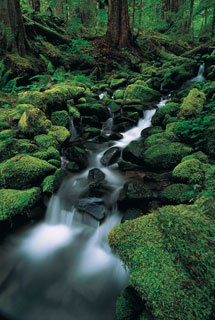

So sieht ein Bild auf der Web-Seite aus:
Du kannst auch die Größe verändern:
Minecraft ist ein Open-World-Spiel ohne ein fest vorgegebenes Spielziel. Das Hauptaugenmerk liegt auf der Erkundung und Entdeckung der von Höhlen und Dungeons durchzogenen Spielwelt sowie dem Bau eigener Gebäude und Vorrichtungen. Der Spieler kann Rohstoffe abbauen, diese zu anderen Gegenständen weiterverarbeitenund gegen Monster kämpfen. In Minecraft gibt es hauptsächlich zwei Spielmodi: den Überlebensmodus, in dem der Spieler Ressourcen sammeln muss und eine Gesundheitsleiste hat, und den Kreativ-Modus, in dem es keine Gesundheit gibt und dem Spieler unbegrenzte Mengen an Ressourcen zur Verfügung stehen.